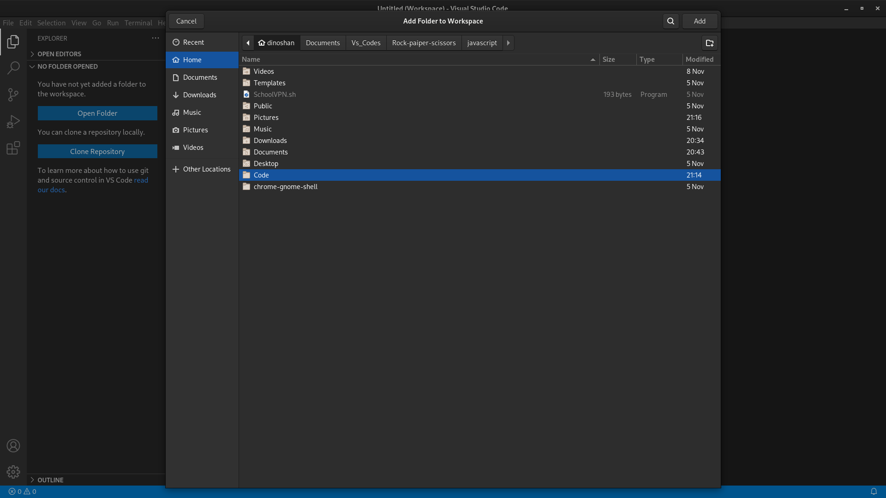

Trykk på lenken under og last nedd Visual studios:
opne terminale og skrive
paru -S vscodium og velg default
Dette funger for windows, mac og linux brukere.
Start opp programvaren og try på Ektensions
Så søk på Python, og velg det først og lastneed.
For å bynne å kode trenger du å lange en Programering folder I fillene dinne, dere alt koden din kommer til å bli lagret.
Nå hvis du langer en python fill eks: Demo.py og skriver print(“Hello, World!”) og høyre kliker vill du see dette.